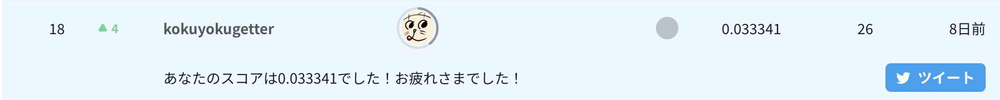

Nishika 金融時系列分析18位解法

TLDR
- 基本的には このトピックをそのまま丸パクリ。
- 加えて、説明変数のクラスタリングにより説明変数の総合得点化を行った。
- クラスタ数・アンサンブルするモデル数・エポック数についてハイパーパラメータ探索を行った。その際の評価を慎重に行った。
- Notebookは こちら
コンペ概要
本コンペでは、金融関連企業様のデータを用いて、数百の匿名特徴量を用い、金融に関する或るターゲット値を予測することをテーマとします。 予測精度の評価はcosine similarityにて行います。 このコンペティションでは、テストデータの約29%により暫定スコアが計算され、残りの約71%により最終スコアが計算されます。
https://competition.nishika.com/competitions/finance_ts/summary より引用
特徴量が匿名であり、この項目はどういう意味があるのか、などの推測が難しくなっている。
また、評価指標がコサイン類似度であることもなかなか癖があり、難しい点と個人的には思う。
EDA
- 各説明変数は5段階になっている。アンケート的なものを想像し、似たような項目はまとめて総合得点化することが効果的かもしれないと考えた。
- targetの値が10段階しかないことがわかる。
- 最終的には連続値として回帰を行ったが、multiclassで10クラスの確率を予測し、10クラスの値を予測確率で重みつき平均をとったものも効果的だったように思う。1
- こちらのトピックより、スコアのばらつきが大きそうであることを確認。
前加工＋モデル作成
- 説明変数の類似項目がどれかは匿名化によって一見では分からないため、
こちらのブログを参考に、相関係数（絶対値はかけなかった）で説明変数のクラスタリングを行った。
- クラスタ数を後述のハイパーパラメータとして探索し、220を採用した。このクラスタ内の説明変数の和を新たな説明変数として用い、変数を220まで減らすことができた。
- もちろん、説明変数を減らすことで情報が減っているので、やるべきかという問題はある。
- 絶対値をかけてクラスタリングを行い、その正負を考慮して和を取る方が良さそうだが、すぐには実装が思いつかなかったため断念。
- クラスタ数を後述のハイパーパラメータとして探索し、220を採用した。このクラスタ内の説明変数の和を新たな説明変数として用い、変数を220まで減らすことができた。
-
こちらのトピックより、以下の2点を丸パクリ。
- グループ (id // 10,000) の追加。テストデータのグループは66に設定。
- LightGBMでの回帰モデルを作成とバギングとアンサンブル
ハイパーパラメータの調整
- クラスタ数・アンサンブルするモデル数・エポック数についてハイパーパラメータ探索を行った。
- trainデータを40万件と26万件に分けてコサイン類似度のスコアを見て最も良さそうなパラメータを採用する。
- その際に、±0.01程度スコアが前後することが分かっていたので、26万件からランダムに29%と71%に分けて1000回スコアを出してその分布（平均値）を見ることにより決定した。
- また、publicスコアが低い（分布の下側にいる）場合にprivateスコアが高くなる（分布の上側にいる）傾向にあるような気がしたが、提出したpublicスコアが高いか低いかわからないしあまり意味はない？
結果
以上の方法により、Publicスコア0.049781、Privateスコア0.033341で18位となった。
（Publicスコアは黒魔術2入りのものが0.0565と自己ベストだったが、そちらのPrivateスコアは0.014404。）
宝くじ・運ゲーコンペと噂されているように、偶然で上位に行く可能性が十分にあるコンペだと思われるので、今回の解法が良いものかは分からないが、実際大きなshakeが起きなかったので、ハイパーパラメータ探索などにおいて堅いものを選べたのではないかと思っている。
-
単純に前処理も何もせず、shuffleありの5-foldで10クラスの分類をLightGBMで行い、重みつき平均を行ったものが、privateスコアは0.037098と2位相当のスコアになっていた。しかしpublicスコアが0.031396と少々低く、最終提出の中に含めることはできなかった。 実際のnotebook ↩︎
-
丸パクリしたトピックに記載のある後処理。 ↩︎